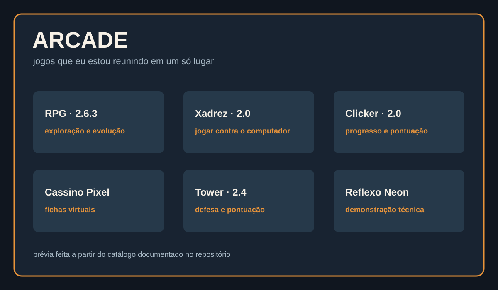

Projeto pessoal · em desenvolvimento
Arcade
É um site inspirado na ideia de uma Steam de jogos. Eu estou reunindo jogos, catálogo, identidade visual e uma área para acompanhar o desempenho. É o projeto que mais me anima porque junta programação e uma ideia que é minha.
Ver o repositório do Arcade ↗